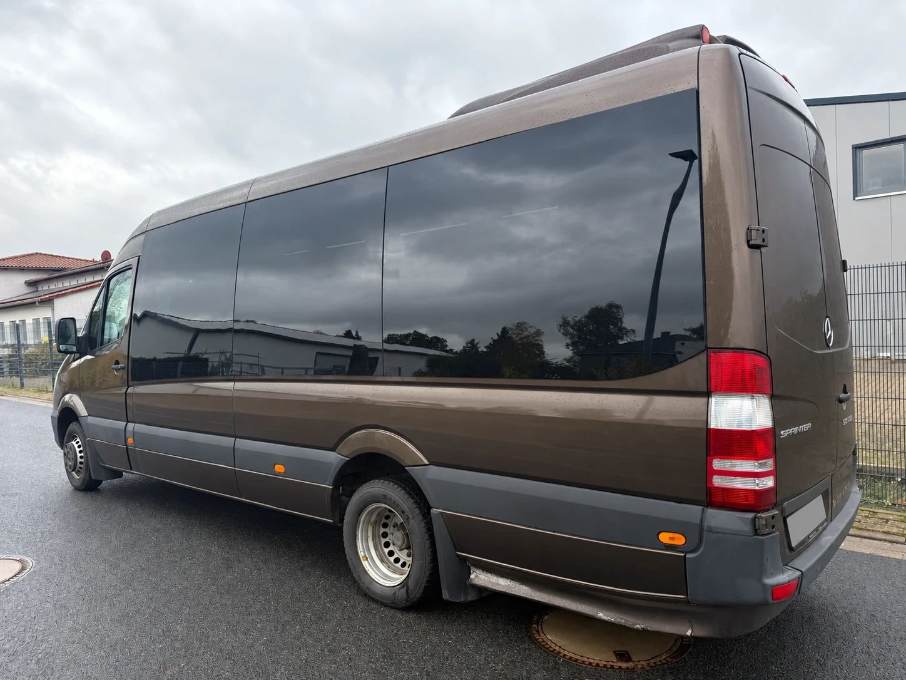
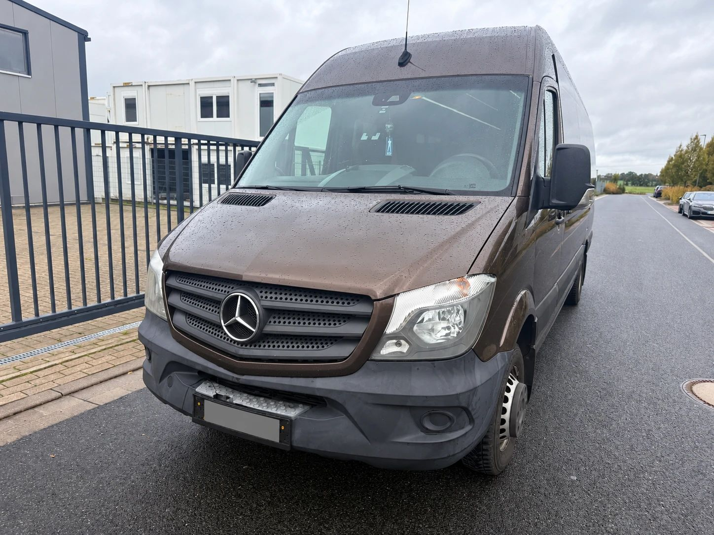
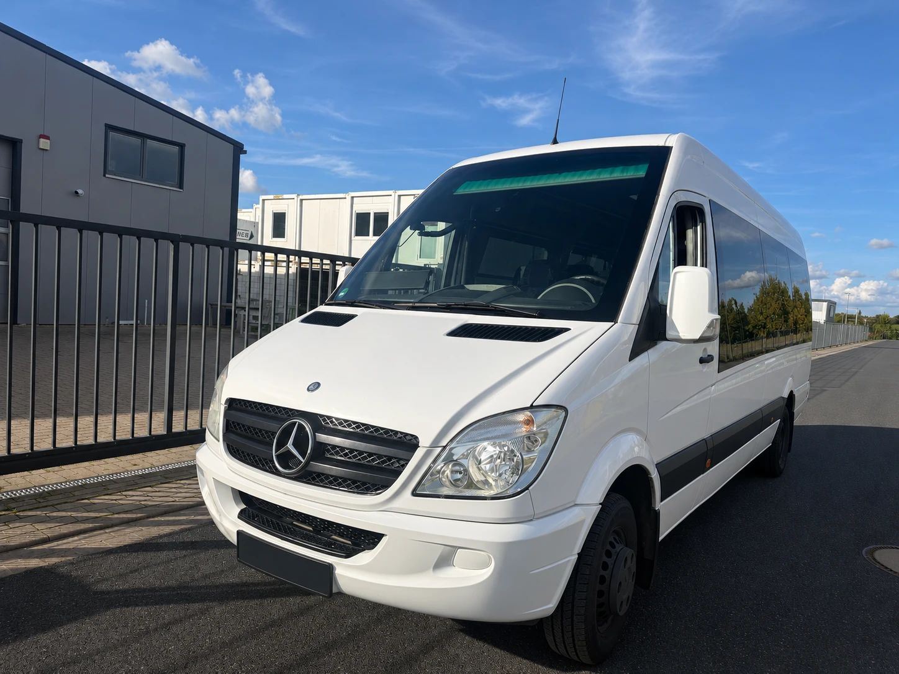

Er bringt Fluggäste vom Terminal ins Hotel, Kinder zur Förderschule und die Fußballmannschaft zum Auswärtsspiel. Auf dem Land fährt er als Rufbus, in der Stadt als Shuttle für Messen und Firmen. Der Mercedes-Benz Sprinter als Kleinbus ist aus dem Personenverkehr nicht wegzudenken, und die Ausführung mit der Zahl 519 am Heck gehört zu den bekanntesten.
Wir bringen über 30 Jahre Erfahrung im Fahrzeughandel mit und haben den Sprinter 519 als Bus schon mehrfach angekauft. Die Fotos in diesem Beitrag zeigen einen davon. Hier erklären wir, was hinter der Zahl steckt, warum gerade die 5-Tonnen-Klasse für Busse so wichtig ist und worauf es beim Verkauf ankommt.
Was bedeutet 519 CDI?
Wie beim Atego ist die Zahl eine Kurzbeschreibung. Die erste Ziffer steht für die Gewichtsklasse, die letzten beiden für die Motorleistung in PS, geteilt durch zehn:
- 5: die 5-Tonnen-Klasse, also das schwerste Sprinter-Fahrgestell
- 19: rund 190 PS
- CDI: Common-Rail-Diesel mit Direkteinspritzung
Ein 319 CDI hat denselben Motor, ist aber ein 3,5-Tonner. Spätere Fahrzeuge tragen am Heck teils „BlueTEC“ statt „CDI“. Gemeint ist dann die Abgasreinigung mit AdBlue, der Motor ist derselbe. Welches Gewicht Ihr Sprinter genau hat, steht in der Zulassungsbescheinigung Teil I.

Der V6 im Sprinter 519
Den 519 CDI gibt es seit 2009. Damals stellte Mercedes-Benz die Motoren des Sprinter auf Euro 5 um. Der Vorgänger hieß 518 CDI und hatte 184 PS. Beide fuhren mit demselben Motor: einem Dreiliter-V6 mit der Bezeichnung OM 642. Im 519 leistet er 190 PS (140 kW) und 440 Newtonmeter Drehmoment.
Gerade für Busse war der V6 beliebt. Ein voll besetzter Kleinbus mit Gepäck wiegt fast fünf Tonnen, und der Sechszylinder zieht ihn auch am Berg ruhig und ohne Hochdrehen.
In der aktuellen Baureihe hat Mercedes-Benz den V6 inzwischen gestrichen. Ein neuerer 519 CDI hat einen Zweiliter-Vierzylinder aus der Motorenfamilie OM 654, ebenfalls mit 190 PS (jesmb.de). Wer heute von einem Sprinter 519 mit V6 spricht, meint deshalb fast immer ein gebrauchtes Fahrzeug.
Welche Generation ist es?
Den Sprinter gibt es seit 1995. Den 519 CDI gab es in zwei Generationen:
- Baureihe W906 (2006 bis 2018): im Handel oft „NCV3“ genannt. Der 519 CDI kam 2009, 2013 folgte eine Überarbeitung mit neuer Front und Euro VI.
- Baureihe W907 (seit 2018): im Handel „VS30“. Neues Cockpit, neue Assistenzsysteme, später der Wechsel auf den Vierzylinder.

Die Front verrät die Baureihe am schnellsten. Der W906 nach 2013 hat einen Grill mit drei breiten Streben und Scheinwerfer, die weit in die Kotflügel reichen. Beim W907 ist die Front flacher, die Scheinwerfer sind schmaler. Sicher ist auch hier die Zulassungsbescheinigung: Die Fahrzeug-Identifizierungsnummer enthält die Baureihe.
Warum 5 Tonnen für Busse so wichtig sind
Für einen Kleinbus ist die 5-Tonnen-Klasse kein Zufall. Ein Fahrzeug mit mehr als acht Sitzplätzen neben dem Fahrer gehört nach EU-Recht zur Klasse M2, solange es höchstens 5 Tonnen wiegt. Darüber beginnt die Klasse M3, zu der auch große Reise- und Linienbusse gehören (Verordnung (EU) 2018/858, Artikel 4).
Der 519 nutzt diese Grenze aus. Er hat genug Zuladung für eine volle Bestuhlung mit Gepäck und bleibt trotzdem ein M2-Fahrzeug. Je nach Länge und Ausbau finden bis zu gut 20 Fahrgäste Platz.
Viele Sprinter-Busse hat Mercedes-Benz nicht selbst als Bus verkauft, sondern umbauen lassen. Werkseitig übernimmt das die Mercedes-Benz Minibus GmbH in Dortmund, mit Baureihen wie Sprinter Travel für Reisen, Transfer für Shuttle- und Schülerverkehr, City für den Linienverkehr und Mobility für Fahrgäste im Rollstuhl. Dazu kommen zahlreiche freie Ausbauer.
Welcher Führerschein für den Sprinter 519 Bus?
Wer mehr als acht Fahrgäste befördert, braucht einen Busführerschein. Für den Sprinter heißt das:
- Klasse D1 reicht für Busse mit höchstens 16 Fahrgastplätzen und höchstens 8 Metern Länge.
- Klasse D ist nötig, sobald der Sprinter mehr als 16 Fahrgastplätze hat.
Das überrascht viele. Ein Sprinter mit 19 Sitzen ist nicht größer als einer mit 16, verlangt aber den vollen Busführerschein. Für Vereine und kleine Betriebe, deren Fahrer nur D1 haben, ist die Zahl der Sitze deshalb oft wichtiger als die Ausstattung. Wer gewerblich Fahrgäste befördert, braucht außerdem die Berufskraftfahrer-Qualifikation.

Tempo 100 und Maut: Was für Kleinbusse gilt
Geschwindigkeit. Ein Kraftomnibus darf auf der Autobahn grundsätzlich 80 km/h fahren. 100 km/h sind erlaubt, wenn das in der Zulassungsbescheinigung eingetragen ist, die Fahrgastsitze als Reisebestuhlung ausgeführt sind, alle Sitze Gurte haben und ein Geschwindigkeitsbegrenzer auf höchstens 100 km/h eingestellt ist, dazu kommen weitere technische Voraussetzungen (§ 18 Abs. 5 StVO). Für Shuttles zum Flughafen oder für Reisen ist der Eintrag „Tempo 100“ deshalb viel wert.
Maut. Seit dem 1. Juli 2024 gilt die LKW-Maut schon ab 3,5 Tonnen. Ein Sprinter 519 als Kastenwagen oder Pritsche im Güterverkehr ist damit mautpflichtig. Kraftomnibusse sind dagegen ausdrücklich von der Maut ausgenommen (§ 1 Abs. 2 Bundesfernstraßenmautgesetz). Der Kleinbus fährt also mautfrei, obwohl er genauso schwer ist wie der Transporter.
Was ist ein gebrauchter Sprinter 519 Bus heute wert?
Oft weniger, als Verkäufer erwarten. Der Sprinter ist gefragt, aber diese Punkte drücken den Preis:
- Das Angebot. Schülerverkehr, Fahrdienste und Shuttles laufen über Verträge und Ausschreibungen. Endet ein Vertrag, kommen oft mehrere Busse gleichzeitig auf den Markt.
- Der Ausbau. Jeder Kleinbus ist anders bestuhlt: mal mit Rollstuhlplätzen, mal mit Stehplätzen, mal mit Reisesitzen. Was für den einen Käufer ideal ist, passt für den nächsten gar nicht. Je spezieller der Ausbau, desto kleiner der Kreis der Interessenten.
- Die Unterlagen. Ein Umbau zum Bus muss abgenommen und eingetragen sein. Fehlen Nachweise zu Sitzen, Gurten oder Tempo 100, wird es für jeden Käufer aufwendig.
- Der Führerschein. Mehr als 16 Fahrgastplätze heißt Klasse D. Damit fallen viele private und ehrenamtliche Käufer weg.
- Inseratspreise sind keine Verkaufspreise. Was in Online-Börsen steht, ist der Wunsch des Verkäufers. Der tatsächlich erzielte Preis liegt nach der Verhandlung meist darunter.
- Der Weg ins Ausland kostet. Viele gebrauchte Sprinter-Busse finden ihre Käufer im Ausland. Transport, Papiere und Zoll fließen in jeden Ankaufspreis ein.
Trotzdem lohnt sich der Verkauf fast immer. Ein Bus, der nicht mehr fährt, kostet jeden Monat Steuer, Versicherung und Stellplatz, und auch die Hauptuntersuchung ist bei Bussen jedes Jahr fällig. Wer verkauft, solange der Bus noch im Einsatz ist, erzielt in der Regel das bessere Ergebnis.
Wir kaufen Sprinter-Busse an
Die ECS Exclusive Commerce Services GmbH aus Gehrden bei Hannover kauft Sprinter 519 und andere Kleinbusse an, egal ob Transfer, Travel, City oder freier Ausbau, einzeln oder als ganzen Fuhrpark. Auch Sprinter als Kastenwagen oder Pritsche nehmen wir: Mehr dazu unter Transporter verkaufen. Für größere Busse gibt es eigene Seiten zum Reisebus verkaufen und Linienbus verkaufen. Welche Fahrzeuge wir sonst noch ankaufen, sehen Sie unter Was wir ankaufen.
So läuft es ab:
- Sie rufen uns an, schreiben uns per WhatsApp oder senden uns eine E-Mail.
- Sie nennen uns Typ, Erstzulassung, Kilometerstand, Zahl der Sitzplätze und Standort und schicken ein paar Fotos, auch vom Innenraum.
- Wir machen Ihnen ein konkretes Angebot.
- Nach Ihrer Zusage erstellen wir den Kaufvertrag und schließen das Geschäft ab.
- Wir holen den Bus ab, deutschlandweit.
Mehr zum Ablauf lesen Sie unter Unsere Arbeit. Sie möchten Ihren Sprinter-Bus verkaufen? Schreiben Sie uns oder rufen Sie an.
Hinweis: Dieser Beitrag dient der allgemeinen Information und ersetzt keine Rechts- oder Steuerberatung. Alle Angaben ohne Gewähr, Stand: 5. November 2026. Genannte Marken und Modellbezeichnungen gehören ihren jeweiligen Inhabern. Die ECS GmbH ist ein unabhängiger Händler und steht in keiner Verbindung zu den Herstellern.